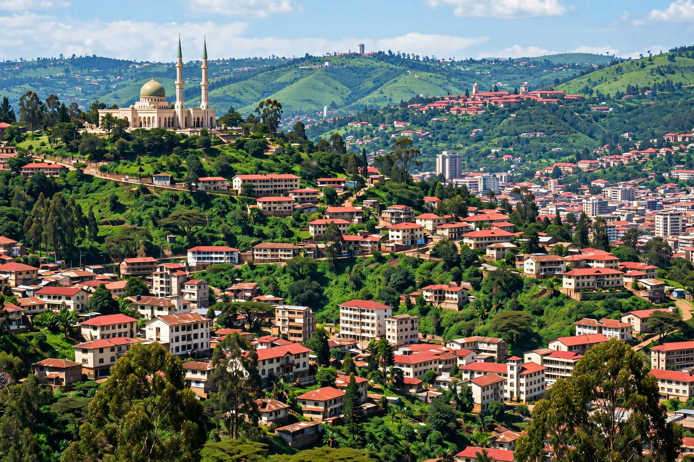

[Image placeholder: Kampala, a city built across many hills]| Country | Uganda |
|---|---|
| Population | About 1.7 million (city); metro about 3.8 million, estimates |
| Elevation | About 1,190 m |
| Name origin | From 'Kasozi k'Impala' — hill of the impala |
**Kampala** is the capital and largest city of Uganda, near the northern shore of Lake Victoria. Built across rolling hills — originally seven, now many more — it grew from the capital of the Buganda kingdom: the kabaka (king) Mutesa I kept his court here, and the Kasubi Tombs of the Buganda kings, a UNESCO site, stand on one hill.
British colonial administration developed beside the royal city at Mengo, and Kampala became capital of independent Uganda in 1962. The city suffered badly under Idi Amin and the civil wars of the 1980s, then revived into a bustling commercial hub famous for its matatu minibuses, boda-boda motorcycle taxis, the vast Owino market, and a lively music and nightlife scene. Makerere University (1922) is one of Africa's great universities.
Kampala's hills are cut by wetlands draining to Lake Victoria, which flood worsens as wetlands are built over. The metropolitan area spreads into Wakiso District and includes the industrial city of Jinja further east at the Nile's source.